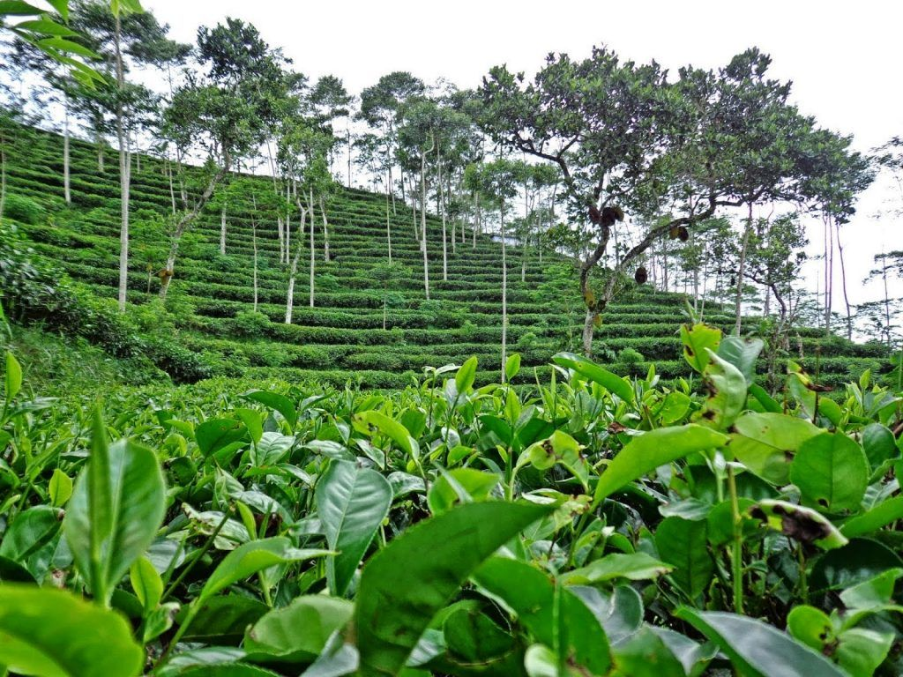

Kebun Teh Nglinggo
Siapa bilang kebun teh hanya ada di daerah pegunungan. Di kompleks Perbukitan Menoreh yang berada di Kabupaten Kulonprogo, DIY, terdapat kebun teh Nglinggo seluas lebih dari 136 hektare menghampar. Sebenarnya kebun teh yang berada wilayah perbatasan antara Kabupaten Kulonprogo, DIY dan Kabupaten Magelang, Jawa Tengah itu sudah ada sejak era 1990-an. Namun berkat kreativitas warga, kawasan yang semula sekadar kebun pada umumnya, sejak 2015 lalu disulap menjadi sebuah objek wisata yang menarik. Dengan mengandalkan pemandangan hijaunya hamparan kebun teh, udara yang sejuk, dan deretan gunung yang ada di sekitarnya, Kebun Teh Nglinggo kini jadi salah satu tempat wisata favorit wisatawan saat berkunjung ke DIY. Bahkan, tahun lalu, objek wisata itu dianugerahi sebagai Community Best Tourism oleh Kementerian Pariwisata. Kini, tempat tersebut sudah menjadi bak surga, tak hanya bagi wisatawan, namun juga untuk masyarakat setempat. Betapa tidak, masyarakat yang dulunya hanya meraup rupiah dari hasil kebun teh, kini mereka mendapatkan tambahan pendapatan dari wisata yang kian ramai pengunjung.
Meski tak seluas kebun teh yang sudah lebih populer di sejumlah daerah lain, bukan berarti lantas Kebun Teh Nglinggo menjadi objek wisata perkebunan yang membosankan. Masyarakat dan Pemkab Kulonprogo kini terus melengkapi fasilitas di objek wisata ini. Sebut saja misalnya penginapan, area parkir luas, rumah makan, hingga gardu pandang sudah disiapkan masyarakat menyambut setiap wisatawan yang datang. Tak hanya itu, sejumlah wahana kini juga sudah ada, misalnya penyewaan kendaraan off road, serta spot-spot foto di dengan latar belakang luasnya panorama alam. Tak hanya itu, wisatawan juga bisa trekking menjelajahi kompleks perbukitan dengan hamparan hijau tanaman teh. Konturnya yang naik-turun dijamin bakal menjadi sensasi tersendiri bagi wisatawan.
Area Kebun Teh Nglinggo terdapat beberapa bukit yang bisa dijelajahi oleh wisatawan yang memiliki hobi trekking. Sebut saja misalnya di sisi utara kebun, ada Bukit Kendeng serta Bukit Kukusan yang secara administratif masuk di wilayah Magelang, Jawa Tengah. Tak jarang wisatawan rela bangun lebih pagi hanya untuk menikmati sensasi keliling kebun dan naik-turun bukit. Suasana kebun yang hijau dan udara yang sejuk membuat wisatawan terasa nyaman menjelajah. Dari beberapa puncak bukit yang ada, wisatawan bakal disuguhi panorama alam yang memukau. Sejumlah gunung yang jadi atap Jawa Tengah seolah terlihat menyembul dari balik awan. Jika musim kemarau, atau saat langit sedang cerah, wisatawan bakal bisa melihat deretan delapan puncak gunung dari kejauhan. Misalnya saja Gunung Merapi, Merbabu, Andong, Telomoyo, Ungaran, Sumbing, Sindoro serta Prau.
Secara administratif kebun teh nglinggo berada di Dusun Nglinggo, Desa Pagerharjo , Kecamatan Samigaluh, Kabupaten Kulon Progo, DIY. Lebih tepatnya berada di ujung barat DIY, di pucuk Perbukitan Menoreh. Rute tercepat menuju ke Kebun Teh Nglinggo adalah dengan melewati Jalan Godean. Dari Tugu Jogja, silakan wisatawan ambil arah ke barat sekitar 18 kilometer menuju Kulonprogo. Setelah melewati jembatan Sungai Progo wisatawan akan menemukan traffic light. Dari situ silakan belok ke kanan, kurang lebih 18 kilometer, setelah menemukan traffic light berikutnya, yakni persimpangan Dekso, wisatawan ambil ke arah kiri. Sekitar 10 kilometer, wisatawan Pasar Plono, dari situlah papan petunjuk ke pintu retribusi kebun teh berada.
berikut sekilas suasana di Kebun Teh Nglinggos
Source: Youtube